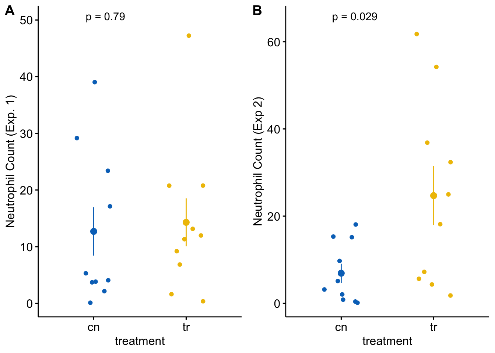

Chapter 2 Organization – R Projects and R Notebooks
A typical statistical modeling project will consist of:
- importing data from Excel or text (.csv or .txt) files
- cleaning data
- initial exploratory plots
- analysis
- model checking
- generating plots
- generating tables
- writing text to describe the project, the methods, the analysis, and the interpretation of the results (plots and tables)
The best practice for reproducible research is to have all of these steps in a single document and all of the files for this project in a single folder (directory), preferably on a cloud drive. Too many research projects are not reproducible because the data were cleaned in Excel, and then different parts of the data were separately imported into a GUI statistics software for analysis, and then output from the statistics software was transcribed to Excel to make a table. And other parts of the analysis are used to create a plot in some plotting software. And then the tables and plots are pasted into Microsoft Word to create a report. Any change at any step in this process will require the researcher to remember all the downstream parts that are dependent on the change and to re-do an analysis, or a table, or a plot, etc. etc.
R studio encourages best practices by creating a project folder that contains all project documents and implementing a version of markdown called R Markdown. An R Markdown document can explicitly link all parts of the workflow so that changes in earlier steps automatically flow into the later steps. At the completion of a project, a researcher can choose “run all” from the menu and the data are read, cleaned, analyzed, ploted, tabled, and put into a report with the text.
2.1 R vs R Studio
R is a programming language. The software that translates this language into instructions for your computer works behind the curtain. To use R, you need some kind of interface software. R Studio is the interface software used in this text. R Studio has options for creating multiple document types that can interface with R. This text uses R Markdown documents, but interestingly R Studio provides two kinds of R Markdown document – “R Markdown” and “R Notebook”
2.2 R Notebook vs. R Markdown
Markdown is a document processing tool for writing single documents that contain text (word processing), code, images, and tables in a single file that can then be knit to all the modern output formats including html for web pages, pdf for technical reports or submissions to journals, and microsoft word for professors or colleagues who are stuck in 1999.
R Markdown is R Studio’s version of Markdown. If an R Markdown document is knitted to an html document and opened in a web browser, you will see a pretty web page with your text, code, and images. If the html file is opened in R Studio, you will see a text document of the html code. You won’t see pretty text or images or even your R code.
An R Studio Notebook is an R Markdown file. The file is saved with the .Rmd extension like any R markdown file. An R Studio Notebook automatically creates an preview file with the extension .nb.html. If the nb.html file is opened in a web browser, you will see a pretty web page with your text, code, and images – just like a normal .html file knitted from a normal R Markdown document. But if the .nb.html file is opened in R Studio, you will see the original R Markdown document. Neat!
R Studio Notebooks have advantages and disadvantages. If I use R Markdown to analyze data for a colleague, I can give the colleague the knitted .html file as a beautiful, readable report. In a typical report to colleagues, I will probably hide all the underlying code used to import and wrangle the data, do the computations, and construct the figures. If a colleague wants the underlying code, I have to send the original .Rmd file with the .html file. Or I have to knit two versions of the .html file, a pretty one without all the code chunks and the complete one, with all the code chunks.
If I create my report using an R Studio Notebook and knit to a .nb.html file, then the colleague can see both with a single file! If they only want to read the text and see the pretty images and tables, they can just open the .nb.html file in a browser. But if they want to see the code that did everything, they can open the file in R Studio. Awesome!
An R Studio Notebook is the good tool for a student in a class. The student can send the professor the .nb.html file and the professor can recover the full R Markdown document if needed.
When would I not use R Studio Notebooks? One example is teaching. If I create an assignment where students have to import data, wrangle the data, analyze the data, and create a plot and table, I might give them an .html file with the target image and table…can they reproduce this? I’d create the assignment as an R Markdown document and include code chunks that do everything – import, wrangle, analyze, plot, table. For the output html, I’d hide the chunks that do all this. If compiled from a R Markdown document, a student could not recover the hidden code. But if compiled from a R Studio notebook document, the student could simply open the .nb.html file in R Studio and recover the original R Markdown document! Don’t do this!
Some other differences between R Markdown and R Notebook
The preview (.nb.html) file for a R Notebook is made and updated when the notebook file is saves and includes whatever has been run in the R Notebook document. If a chunk that creates a plot has not been run, the preview file will not show the plot. If a chunk returns messages or warnings, the html preview will show these messages or warnings. This can create a very messy html document to give to a colleague or professor. To hide the messages and warnings, the chunk options “message=FALSE” or “warning=FALSE” have to be added to each chunk with a message or warning and then the chunk has to be re-run. Now the preview file is clean.
This behavior is very different from knitting a R Markdown file. When knit, all chunks are run so if a chunk creating a plot was not manually run, the chunk will be run during the knit and the plot will show in the output. Since knitting runs all chunks, a user can create global behavior such as inserting knitr::opts_chunk$set(message = FALSE) into the setup chunk. Now a chunk that returns a message when run interactively will not show the message in the knit output. But if I insert this into the setup chunk of an R Notebook document, it will have no effect on the preview because the preview is not a knit file from a clean run of all chunks but a knit file of what the user has done. I sometimes want to see messages and especially warnings when I interact with my chunks but I almost never want these messages in my output. This is easier to do with R Markdown instead of R Notebook because of this ability to set global options.
2.3 Importing Packages
The R scripts you write will include functions in packages that are not included in Base R. These packages need to be downloaded from an internet server to your computer. You only need to do this once (although you have to redo it each time you update R). But, each time you start a new R session, you will need to load a package using the library() function. Now is a good time to import packages that we will use
Open R Studio and choose the menu item “Tools” > “Install Packages”. In the “packages” input box, insert the names of packages to install the package. The names can be separated by spaces or commas, for example “data.table, emmeans, ggplot2”. Make sure that “install dependencies” is clicked before you click “Install”. Packages that we will use in this book are
- Import and analysis packages
- here – we use to read from and write to the correct folder
- janitor – we use the function clean_names from this package
- readxl – elegant importing from microsoft Excel spreadsheets
- data.table - improves functionality of data frames
- analysis packages
- nlme – we use this for gls models
- lme4 – we use this for linear mixed models
- lmerTest – we use this for inference with linear mixed models
- glmmTMB – we use this for generalized linear models
- MASS – we will use glm.nb from this package
- afex – we use this for classic ANOVA
- emmeans – we use this to compute modeled means and contrasts
- graphing packages
- ggplot2 – we use this for plotting
- ggsci – we use this for the color palettes
- ggpubr – we use this to make ggplots a bit easier
- ggforce – we use this for improved jitter plots
- cowplot – we use this to combine plots
Once these are installed, you don’t need to do this again. You simply need to use the library() function at the start of a markdown script.
2.4 Create an R Studio Project for this textbook
- Create a project folder within the Documents folder (Mac OS) or My Documents folder (Windows OS). All files associated with this book will reside inside this folder. The name of the project folder should be something meaningful, such as “Applied_Biostatics” or the name of your class (for students in my Applied Biostatics class, this folder could be named “BIO_413”).
- Within the project folder, create new folders named
- “Rmd” – this is where your R markdown files are stored
- “R” – this is where additional R script files are stored
- “data” – this is where data that we download from public archives are stored
- “output” – this is where you will store fake data generated in this class
- “images” – this is where image files are stored
- Open R Studio and click the menu item File > New Project…
- Choose “Existing Directory” and navigate to your project folder
- Choose “Create Project”
- Check that a “.Rproj” file is in your project folder
2.4.1 Create an R Markdown file for this Chapter
- The top-left icon in R Studio is a little plus sign within a green circle. Click this and choose “R Markdown” from the pull-down menu.
- Give the file a meaningful title like “Chapter 1 – Organization”
- Delete all text below the first code chunk, starting with the header “## R Markdown”
2.4.1.1 Modify the yaml header
Replace “output: html_document” in the yaml header with the following
output:
html_document:
toc: true
toc_float: true
code_folding: hide2.4.1.2 Modify the “setup” chunk
The setup chunk should look something like this
2.4.2 Create a “fake-data” chunk
- Create a new chunk and label it “fake-data”. Insert the following R script and then click the chunk’s run button
set.seed(1)
n <- 6
fake_data <- data.table(
treatment = rep(c("cn", "tr"), each = n),
fat_mass = rnorm(n*2, mean = 6.4, sd = 0.9),
lean_mass = rnorm(n*2, mean = 30.1, sd = 4.2)
)
# View(fake_data)This chunk creates fake data. The data aren’t too realistic because there is no expected correlation between fat and lean mass, which would be expected in any real animal. The comment (#) sign before View “comments out” the line of code, so it is not run. Remove the comment and re-run the chunk.
2.4.3 Create a “plot” chunk
- Create a new chunk and label it “plot”. Insert the following R script and then click the chunk’s run button
gg_fat <- ggdotplot(data = fake_data,
x = "treatment",
y = "fat_mass",
fill = "treatment",
palette = "jco") +
ylab("Fat mass (g)") +
NULL
gg_lean <- ggdotplot(data = fake_data,
x = "treatment",
y = "lean_mass",
fill = "treatment",
palette = "jco") +
ylab("Lean mass (g)") +
NULL
plot_grid(gg_fat, gg_lean, labels = "AUTO")## `stat_bindot()` using `bins = 30`. Pick better value with `binwidth`.
## `stat_bindot()` using `bins = 30`. Pick better value with `binwidth`.
2.4.4 Knit
- Knit to an html file
- Knit to a pdf file
- Knit to a word document
Add the code option echo = FALSE to each chunk and re-knit to html, pdf, and word